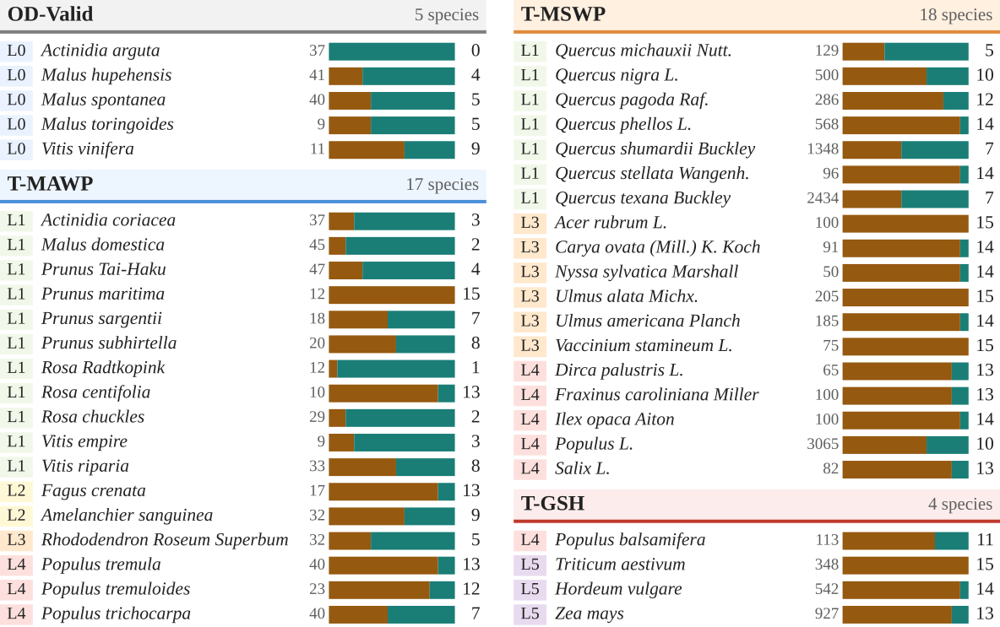
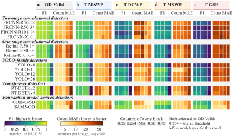

Detectors are scored on boxes. Biology uses density.
Stomata are the microscopic pores plants use to exchange gas and water. Their density, stomata per mm² of plant surface, links cellular anatomy to photosynthesis, transpiration and water-use efficiency. Object detectors now count them at scale.
Does a good detector give a good measurement when the species and the microscope change?
Abstract
Stomatal density is widely measured in plant biology because it links cellular anatomy to photosynthesis, transpiration, water-use efficiency, and global change responses across Plantae. Recent work has addressed scalable stomatal phenotyping by training object detectors to localize and count stomata in microscopy images. Unfortunately, most existing stomatal datasets evaluate detectors within a single acquisition pipeline, leaving open whether their predictions remain reliable under out-of-distribution (OOD) deployment. This matters because detection counts are not the final scientific output. The resulting density measurement is the quantity used for biological interpretation.
In contrast, StomataBench evaluates stomatal detection as a scientific measurement problem under structured OOD shift. StomataBench pairs a single training set, OD-Train, with four held-out test sets that separate taxonomic shift, imaging-system shift, annotator shift, and combined multi-source shift. OD-Train contains 21 woody species, 20 eudicots and one magnoliid, and no monocot, gymnosperm, or fern. To make OOD evaluation biologically meaningful, held-out species are arranged on a six-level OOD ladder grounded in taxonomic distance. Beyond stomatal localization, the evaluation tests whether detector outputs preserve calibrated species-level variation in stomatal density. StomataBench provides a benchmark for testing whether stomatal detectors remain useful as measurement tools under deployment-relevant biological and imaging shifts.
One training set, four held-out test sets
Test species sit on a six-level OOD ladder, set by the first taxonomic rank where they differ from the training species.
Shift from OD-Train: T taxonomic, I imaging system, A annotator. Images and stomata as released.
Every detector is scored twice
R² below 0 means the predicted densities are worse than predicting the species mean for every image. All 15 detectors are fine-tuned once on OD-Train and evaluated unchanged. Results use τ = 0.25 for every detector. Thresholds selected on OD-Valid are reported too.
Findings
1No detector leads every shift
| Test set | Shifted from OD-Train | AP leader | AP50:95 (%) | Second | ||
|---|---|---|---|---|---|---|
| Species | Imaging | Annotators | ||||
| T-MAWP | RT-DETRv4 | YOLOv11 37.76 | ||||
| T-DCWP | SAM3-OD | GDINO-SB 43.26 | ||||
| T-MSWP | GDINO-SB | YOLOv11 44.57 | ||||
| T-GSH | SAM3-OD | GDINO-SB 20.96 | ||||
The best detector depends on the kind of shift, so one held-out test set is not enough to judge transfer.
2Same AP, opposite measurement
The same 45 apple images (Malus domestica, T-MAWP, L1) at τ = 0.25. Brackets are 95% bootstrap intervals.
A species’ AP leader is also its density R² leader for only 1 of the 17 T-MAWP species.
3Density recovery is strongest near the training species

Wheat (L5): on the 348 calibrated wheat images every detector is below 0. OD-Train has no monocots, so wheat is a stress test.
4The confidence threshold changes the winner

T-MAWP species whose density R² leader changes between τ = 0.25 and 0.75. The count MAE leader changes for 14.
On T-MAWP, RT-DETRv4 has the highest AP but one of the highest count MAEs at τ = 0.25, and the lowest count MAE at 0.50. Wheat R² stays below 0 at every threshold.
Takeaways
Benchmark scores are not a deployment guarantee. Calibrate in the target domain, choose thresholds on independent validation data, and keep human review.
Paper, data, weights and code
Images and annotations are released under CC-BY-NC-4.0 with Croissant metadata.
BibTeX
@inproceedings{stomatabench2026,
title = {StomataBench: Measuring Taxonomic Generalization in Stomatal Detection},
author = {Sainath Reddy Gummi and Hankui K. Zhang and Chulwoo Pack and Shyam Solanki and Young Chang},
booktitle = {Advances in Neural Information Processing Systems, Evaluations and Datasets Track},
year = {2026},
url = {https://openreview.net/forum?id=kUdZ3znDlI}
}